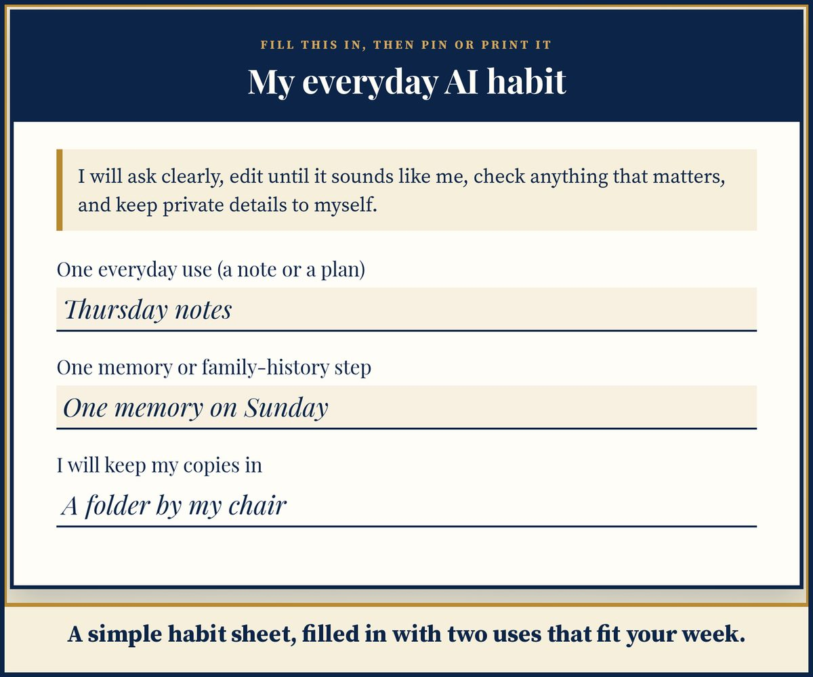

Lesson 8 of 8
Your own simple AI habit, and a plan to keep going
This is the last lesson in Everyday AI, at Your Pace. Today we will turn what you have practiced into a short, repeatable routine, so the tools stay useful after the course ends.
There is no test, and no deadline. You set the pace.
The four habits, in one place
- Ask clearly. Say who you are, what you need, who it is for, and how you want it to sound.
- Edit until it sounds like you. Grok drafts. You decide.
- Check anything that matters. Treat an answer like advice from a helpful stranger. Useful, not final.
- Keep private details to yourself. If you would not put it on a postcard, do not type it in.
A simple weekly rhythm
This is a suggestion, not a requirement. Once a week, try one everyday request, such as a note or a plan. On another day, add one memory or one family-history step. If a week is too much, take longer. If you want to do more, you can. The habit should fit your life, not the other way around.
Your habit sheet
Fill this in with two uses you actually want, then pin or print it.
My everyday AI habit
I will ask clearly, edit until it sounds like me, check anything that matters, and keep private details to myself.
One everyday use (a note or a plan)
One memory or family-history step
I will keep my copies in
This is a suggestion, not a test. The habit should fit your life. There is no deadline.

The checklists in this course
You already have more pages you can reuse any time:
- The clear-request recipe, from Lesson 1.
- The “never share / call back / safe word” card, from Lesson 4.
- Memory prompts, from Lesson 5.
- The family-history fact-check: “I think” versus “the record shows,” from Lesson 7.
Keep them by your chair, or in the same folder as your stories.
Where to go next
If you joined our newsletter, the free weekly Wisdom Edge tip will still arrive in your email. The AI Scam Shield Guide stays the keep-by-the-phone safety reference. There is no extra login, and no deadline. If a message, a call, or an “AI helper” asks for money, a code, or secrecy, pause and call back on a number you already trust.
Try it today
Fill in the habit sheet. Write two uses you actually want, for example “Thursday notes” and “one memory on Sunday.” Pin or print the sheet. If you like, email support@thewisdomedge.com and tell me one thing you tried. Every question is a good question.
Thank you for spending this course with me. Your wisdom was already here. I am glad we got to put a few new tools beside it.
Warmly,
Glenn Lee